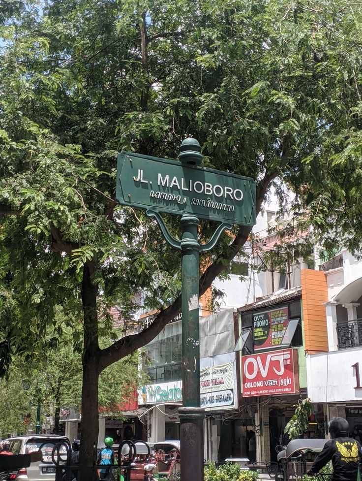

.jpeg)
Keraton
Keraton Yogyakarta didirikan pada tahun 1755 oleh Sri Sultan Hamengkubuwono I, setelah perjanjian Giyanti yang membagi Kesultanan Mataram menjadi dua bagian: Kesultanan Yogyakarta dan Kesunanan Surakarta. Pemilihan lokasi keraton di pinggir Sungai Winongo, Yogyakarta, dilakukan berdasarkan prinsip filosofi Jawa yang mengedepankan keseimbangan alam dan keberlangsungan kehidupan. Sebagai pusat pemerintahan, budaya, dan spiritual, keraton ini menjadi tempat tinggal bagi Sultan dan keluarganya serta menjadi pusat kegiatan sosial dan budaya masyarakat Yogyakarta. Arsitektur keraton yang megah dan khas Jawa mencerminkan nilai-nilai kebudayaan, dengan berbagai simbol yang melambangkan kekuatan dan kewibawaan kerajaan. Seiring berjalannya waktu, Keraton Yogyakarta tetap menjadi pusat kebudayaan Jawa dan tempat yang dijaga dengan baik sebagai warisan sejarah, yang juga menjadi salah satu destinasi wisata utama di Yogyakarta
Kuliner
Gudeg Manggar adalah salah satu kuliner khas Yogyakarta yang memiliki nilai historis dan budaya tinggi karena berasal dari lingkungan Keraton Yogyakarta. Berbeda dengan gudeg biasa yang terbuat dari nangka muda, gudeg manggar menggunakan manggar atau bunga kelapa muda sebagai bahan utamanya. Teksturnya lebih renyah dan rasanya unik, berpadu dengan bumbu khas gudeg yang manis, gurih, dan kaya rempah. Biasanya disajikan bersama ayam opor, telur pindang, krecek, dan nasi putih atau nasi gurih. Gudeg manggar dulunya merupakan hidangan istimewa yang hanya disuguhkan dalam acara adat keraton atau untuk menjamu tamu bangsawan. Kini, makanan ini menjadi simbol kekayaan kuliner tradisional Yogyakarta yang mulai langka dan semakin dicari oleh pencinta kuliner autentik.